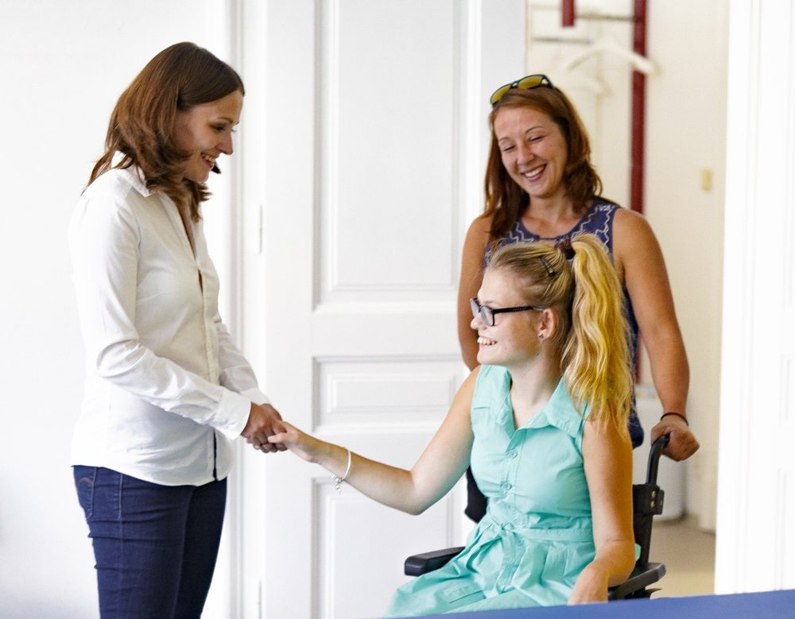

Jedno setkání, na které si necháme dost času. Na konci víte, co se ve vašem těle děje a jak budeme pokračovat.
Rozhovorco vás trápí a odkdy
Vyšetřeníjak se hýbete a dýcháte
MěřeníFormetric a Matscan, když je potřeba
Plándomluvíme se spolu
vše během jedné návštěvy
Týdny
Cvičíme spolu i doma
Uvolníme, co bolí, a naučíme vás cviky, které zvládnete sami.
Měsíce i roky
Pracujeme v souvislostech
Hledáme příčiny i důsledky, ne jen místo, které bolí. Průběžně měříme, plán spolu upravujeme a nad vaším případem se radíme v týmu. Jsme s vámi tak dlouho, jak je potřeba.

Kam taková cesta vedeRok a půl · Tereza„Naučila jsem se respektovat své limity.“Tereze se skoliózou nabízeli jen operaci. S poctivým cvičením, korzetem a velkou dávkou vytrvalosti ušla vlastní cestu – a zjistila, co všechno zvládne. Celý příběh